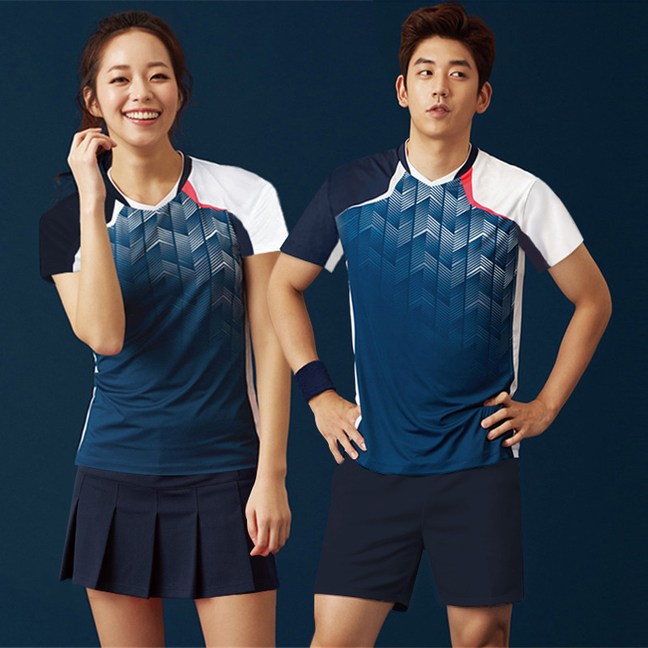
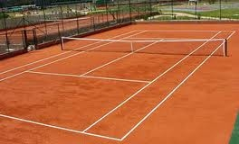
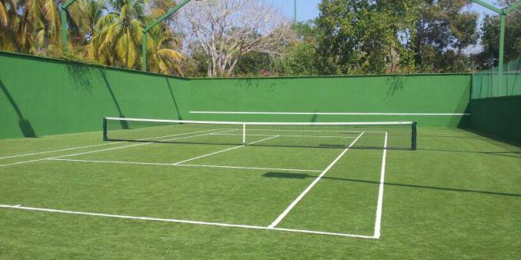
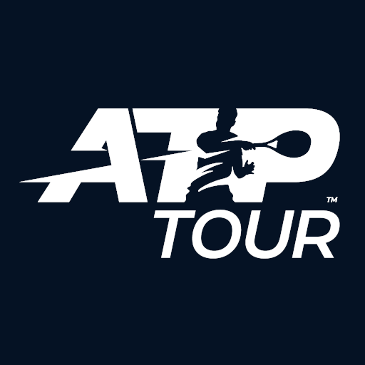
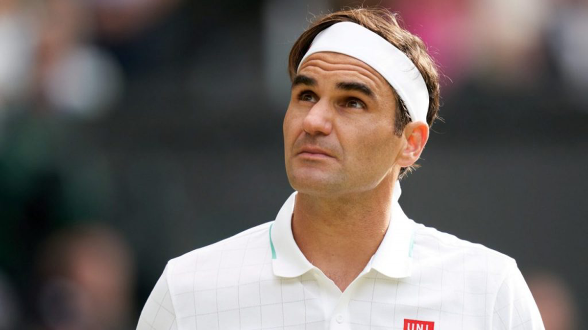
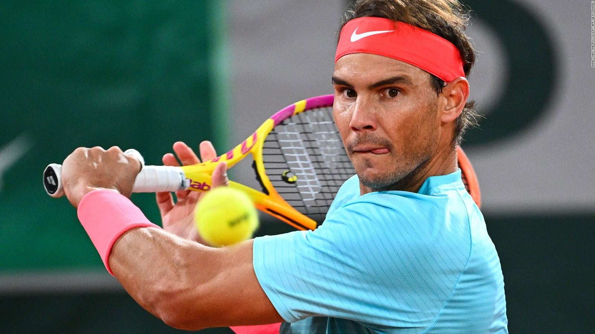
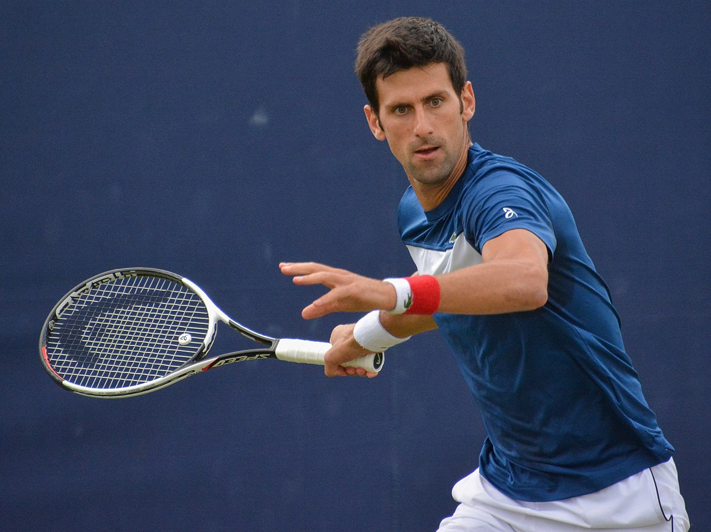

tenis es un deporte individual que se juega de diferentes formas (más comunes):.
1.sencillos: un jugador contra otro jugador.
2. dobles: dos jugadores hacen equipo para enfrentar a otros dos jugadores rivales.
uniformes:
el uniforme es de elección libre y propia del jugador a menos que la marca patrocinadora le ofrezca la vestimenta. camiseta, pantaloneta y tenis.
reglas (comunes):
1. se juega en canchas de acuerdo al torneo; hay 3 tipos
1.1 cancha dura: es una cancha de asfalto o cemento en donde la rapidez de la bola es maxima y la mas veloz respecto a las otras canchas.

1.2 arcilla: se juega en un tipo de polvo de ladrillo y la velocidad es media.
1.3 cesped: se juega en una superficie de pasto en donde la velocidad es baja.
2. se juega partidos a 3 sets
cada set tiene minimo 6 games de juego y para ganar el jugador debe llegar a 6 games y diferencia de 2 games al rival si se llega a 6-6 los dos jugadores se juega un tiebreak para definir el ganador del set quien gane 2 sets de 3 será el ganador
2.1 los puntos de cada juego van de:
0-15-30-40
3. la pelota debe picar maximo 1 vez para que sea devuelta, si la pelota sale de las líneas de campo el punto será perdido.
4. los campeonatos:
al curso del año el tour ATP que es la federacion que comanda el tenis mundial hace diferentes torneos por todo el mundo.
torneos ATP 250
torneos ATP 500
torneos ATP 1000
y los maximos campeonatos son los grand slams y hay 4 en el año
Australian open
Roland Garros
Wimbledon
Us open
en los torneos Grand slams se juegan a 5 sets y el ganador será quién gane 3 de 5 sets en un partido
5. leyendas.
las leyendas del tenis se definen por los campeonatos que ganaron y principalmente por los grand slams
el mejor tenista de la historia es Roger Federer (suiza)
ha ganado la mayor cantidad de dinero
fue el primer tenista hombre en llegar a 20 grand slams
Rafael Nadal (España) es el mejor tenista de la historia en canchas de arcilla
ha ganado 13 Roland Garros simplemente es una bestia del tenis
Novak djokovic (serbia) es de los ultimos años el mejor tenista dominando el circuito ATP
6. el tenis es uno de los deportes más exhaustos y fisicamente demandantes al jugar individual.
en el tenis no hay tiempo límite en los partidos, sino, lo define los games y sets que se demoren en jugarlos los jugadores